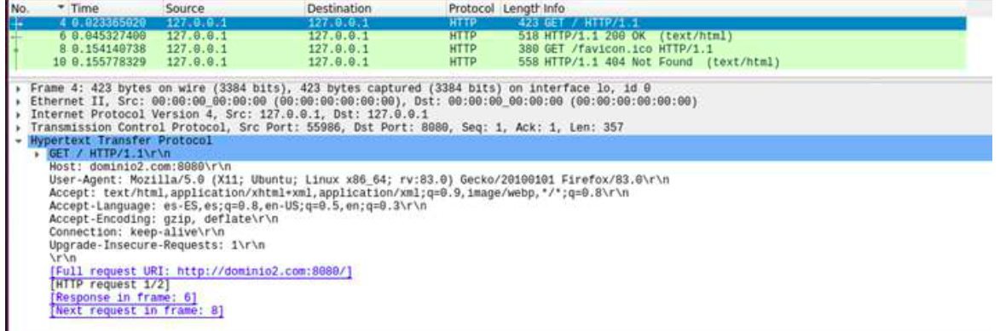
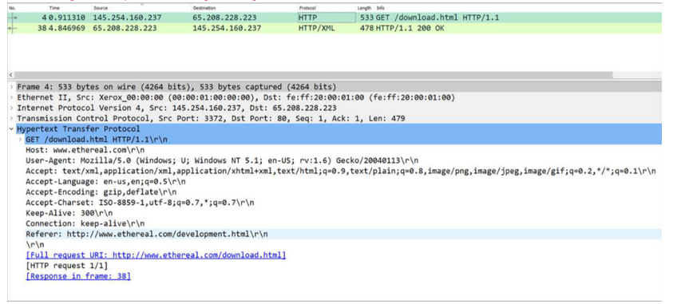
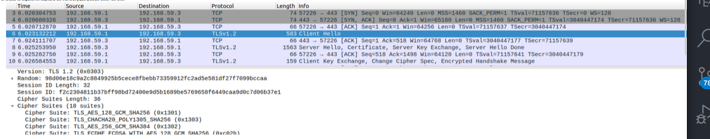
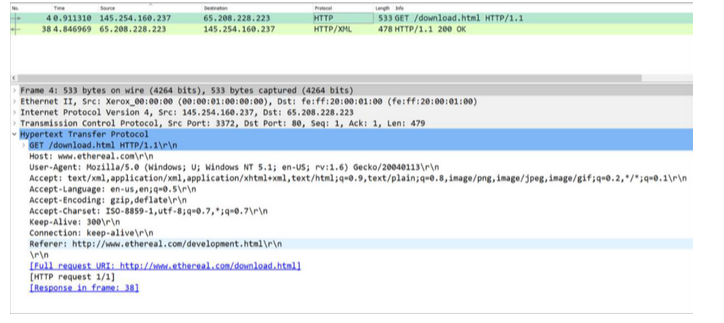
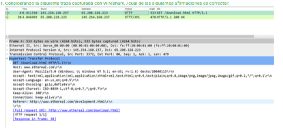
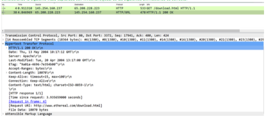
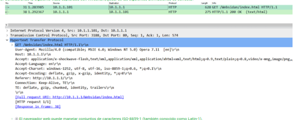
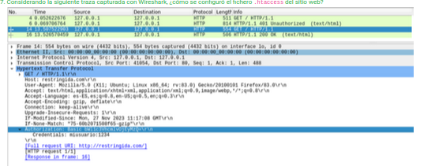
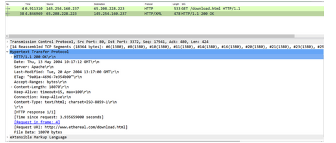

Considerando la siguiente traza, ¿cuál de las siguientes afirmaciones referentes al archivo de configuración, localizado en el directorio /etc/apache2/sites-available/, del correspondiente virtual host es correcta?

.htaccess, ¿qué comando usaría para crear el correspondiente fichero de contraseñas? AuthType Basic AuthName "Directorio con control de acceso" AuthUserFile "/usr/local/apache/passwords" Require user mew/home/administrador/Descargas utilizando openssl. El certificado debe tener una validez de 30 días y la clave privada debe tener una longitud de 1024 bits. ¿Qué comando usaría?fr.com.conf en el directorio /etc/apache2/sites-enabled/?Considerando la siguiente traza capturada con Wireshark, ¿cuál de las siguientes afirmaciones es correcta?

Dada la siguiente captura de tráfico, ¿qué puede decir de ella?

zonaprivada dentro de un dominio llamado nuevodominio gestionado por Apache2, ¿qué deberíamos hacer de entre estas opciones?openssl como sigue para generar el certificado electrónico de un sitio web, ¿cuál de las siguientes afirmaciones referentes al archivo de configuración, localizado en el directorio /etc/apache2/sites-available/, del correspondiente virtual host es correcta? sudo openssl req -x509 -nodes -days 365 -newkey rsa:2048 -keyout /usr/fr.key -out /usr/fr.crtapache.conf, Options Indexes FollowSymLinks AllowOverride None Require all granted ¿cómo la modificaría para permitir interpretar ficheros de autorización .htaccess únicamente en el directorio /var/www/ejemplo/?ServerName ejemplo.com ServerAlias www.ejemplo.com ServerAdmin webmaster@ejemplo.com DocumentRoot /var/www/ejemplo.com/ Options -Indexes +FollowSymLinks AllowOverride All ErrorLog ${APACHE_LOG_DIR}/ejemplo.com-error.log CustomLog ${APACHE_LOG_DIR}/ejemplo.com-access.log combined ¿Qué cabecera HTTP tendría que enviar el cliente al servidor y con qué valor para que ser pueda servir la página de inicio del sitio?192.168.1.5 perteneciente a la red de gestión del laboratorio 3.7 y tiene alojado y configurado el sitio web www.ejemplo.com ¿es necesaria una configuración adicional para servir la página web por defecto de dicho sitio web? Si es así, ¿qué es lo que hay que configurar?openssl como sigue para generar el certificado electrónico de un sitio web, ¿cuál de las siguientes afirmaciones referentes al archivo de configuración, localizado en el directorio /etc/apache2/sites-available/, del correspondiente virtual host es correcta? sudo openssl req -x509 -nodes -days 365 -newkey rsa:2048 -keyout /usr/fr.key -out /usr/fr.crtConsiderando la siguiente traza capturada con Wireshark, ¿cuál de las siguientes afirmaciones es correcta?

mod_ssl de Apache2?Considerando la siguiente traza capturada con Wireshark, ¿cuál de las siguientes afirmaciones es correcta

nuevodominio.es, ¿en qué fichero incluiríamos su configuración?Considerando la siguiente traza capturada con Wireshark, ¿cuál de las siguientes afirmaciones es correcta?

openssl para un sitio web servido con Apache2?Considerando la siguiente traza capturada con Wireshark, ¿cuál de las siguientes afirmaciones es correcta?

Considerando la siguiente traza capturada con Wireshark, ¿cómo se configuró el fichero .htaccess del sitio web?

openssl como sigue para generar el certificado electrónico de un sitio web, ¿cuál de las siguientes afirmaciones referentes al archivo de configuración, localizado en el directorio /etc/apache2/sites-available/, del correspondiente virtual host es correcta? sudo openssl req -x509 -nodes -days 365 -newkey rsa:2048 -keyout /usr/fr.key -out /usr/fr.crtfr.com.conf en el directorio /etc/apache2/sites-enabled/?Considerando la siguiente traza capturada con Wireshark, ¿cuál de las siguientes afirmaciones es correcta?

openssl como sigue para generar el certificado electrónico de un sitio web, ¿cuál de las siguientes afirmaciones referentes al archivo de configuración, localizado en el directorio /etc/apache2/sites-available/, del correspondiente virtual host es correcta? sudo openssl req -x509 -nodes -days 365 -newkey rsa:2048 -keyout /usr/fr.key -out /usr/fr.crt